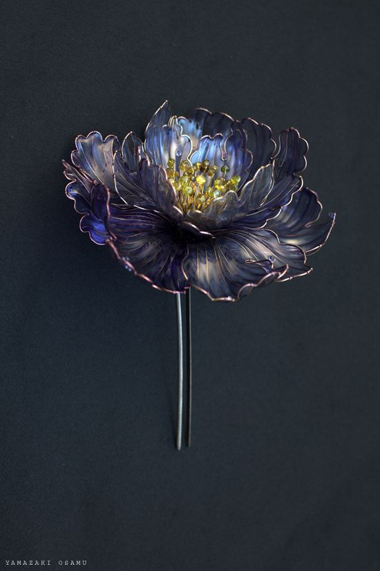

Заколки


Описание товара.
Заколка с цветами.
Характеристика товара.
Заколка выполнена из эпоксидной смолы;
Размер:
- длина - 7 см(без цветка), с цветком - 9-12,
- ширина - 1,5-5 см(в зависимости от выбранного крепления), ширина цветка - 4-6;
Крепление сделано из металла.
Подробное описание товара.
Цветок на заколке создаётся из металлической проволоки, смолы и биссера, прикреплено к шпильке или к гребню(в зависимости от выбранного крепления)